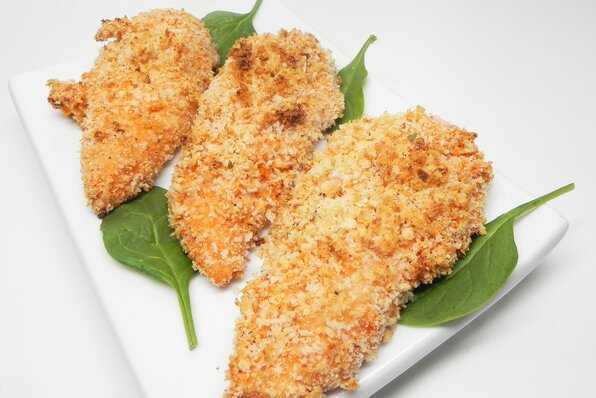

Jake's Panko Chicken Tenders
Home

Description
Chicken tenders, egged and breadcrumbed. Invented by my sister and beloved by Toto.
Ingredients
- 1 large chicken breast
- 1 egg
- 1/2 a cup of panko breadcrumbs
- Salt, pepper and spices to taste
- Sriracha and mayo (or any of your favourite dipping sauces)
Steps
- Coat a frypan in oil and heat
- Cut chicken into strips
- Beat the hegg in a bowl
- Mix the panko with the salt, pepper and spices
- Dip the chicken strips into the egg and panko mix and fry
- Cook the strips on both sides until golden brown
- Serve with dipping sauce